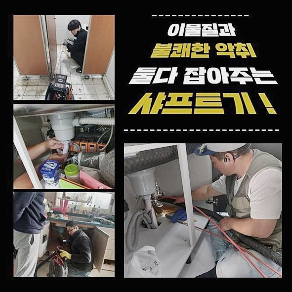
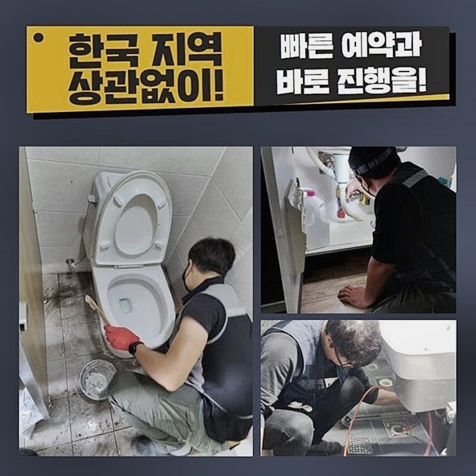
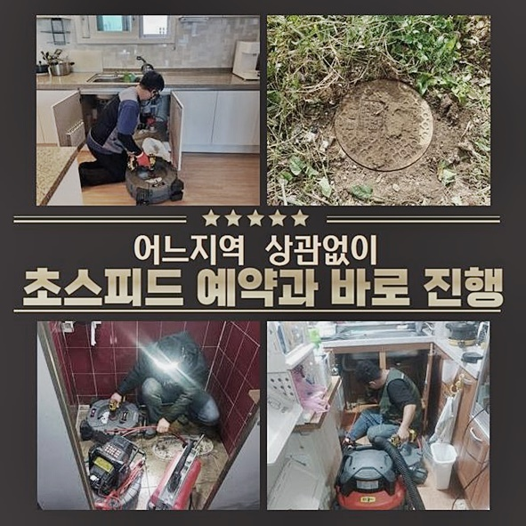
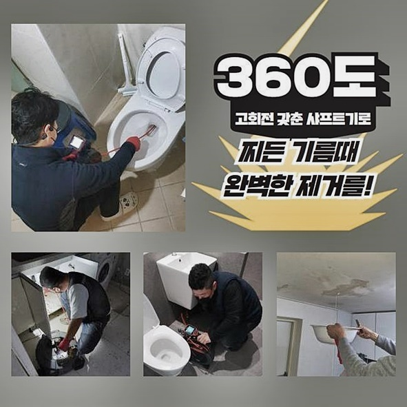
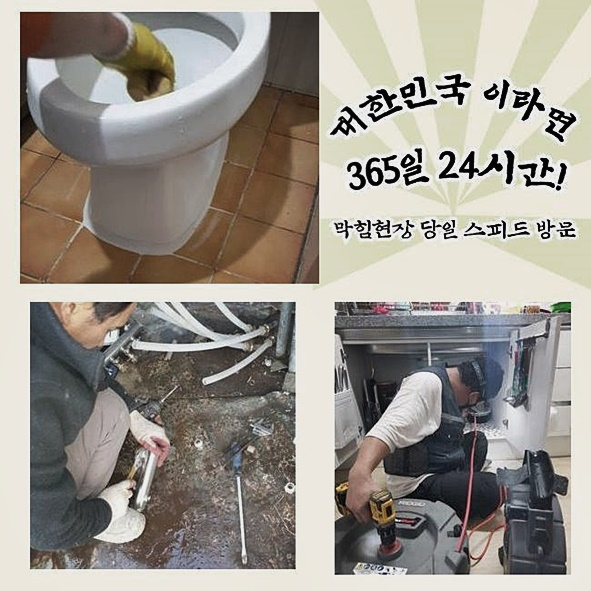
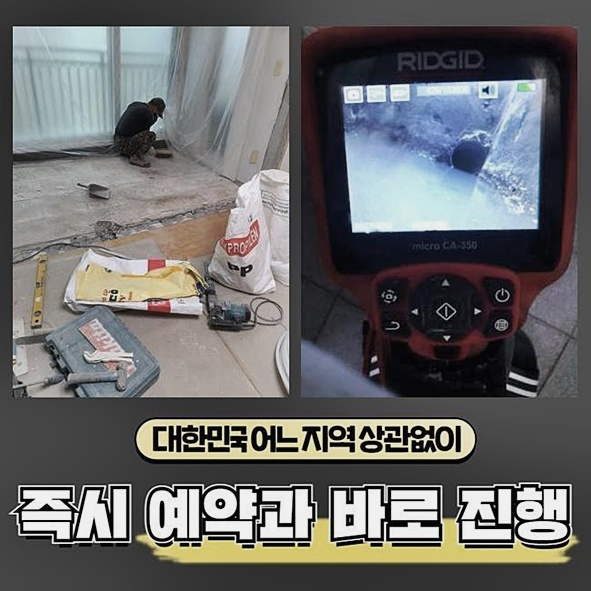
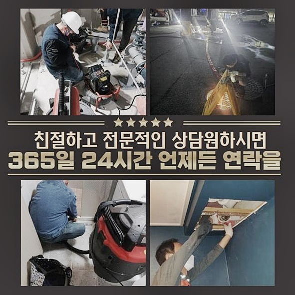

🏠 용산 원효로4가하수구뚫음 이촌동 집수정청소 해결방법
용인시 처인구 배관막힘 전문 시공 후기

📋 작업 개요
- 위치: 용인시 처인구, 수원시 영통구, 화성시 동탄
- 서비스 유형: 배관막힘, 누수수리, 고압세척, 내시경점검
- 작업 일시:
- 업체명: 하수구수사대 (010-5615-2118)
🔍 문제 상황
용산 원효로4가하수구뚫음 이촌동 집수정청소 해결방법
하수관련 설비에서 불현듯 문제가 생겨나면 여러방면에서 엄청난 불편들이 생겨납니다
지금부터는 한 고객분의 사례들을 살피며 증상을 알아보는 시간을 안내드릴테니 정독하시면 유용한 정보가 될거란 장담을 드릴게요!
배수관에 이물질들이 뒤섞인다면 통수가 쉽지않아요
증상들이 발발한 경우엔 재빨리 조치해야 큰 피해를 받지않고 시정하는것이 가능해요
해결하기위해 조심성없이 용도에 맞지 않는 물건을 쓴 뒤 수습하기보단 연유를 확실하게 인지하여 작업들을 밟아나가는것이 좋은데요
어떤절차를 실시해 원인을 찾고 무슨 장비들을 써서 하수도의 이물들을 제거시키는지 지금부터 보실까요?살펴볼게요!
욕실쪽에서 생겨난 석회질로 배수관이 오류를 일으키는 현장에 내방했는데 난처함을 내비치시던 고객은 한시라도 신속히 해결할것을 말씀하셨습니다
얼마전에 전문가라고 하는 자가 방문해보았지만 정확한 원인들을 몰라서 그 곳에서 포기하고서 돌아가버렸다고 말씀하셨어요
앞서서 난감함을 겪으시던 현장에 도착한 다음 석회질들이 많다고 전달받은 화장실공간에 자리한 배관들을 관찰하였더니 깊은 부분에도 석회화 된 잔해가 누적된걸 목격했습니다

🔎 원인 분석
💡 전문가 진단: 정밀 진단 장비를 사용하여 슬러지의 고착 여부를 판명하고 타격/세척 작업을 실시했습니다.
배수구 주위를 보아하니 깊은 구간에도 침전된 석회물질이 쌓인걸로 추측해보았습니다
석회이물 청소의 경우 간단하게 해결될 수 있다고 여겨질수있지만 정확한 양상 파악과 전문기기를 써서 진행시켜야해요
욕실배수오류 청소를 이행하기전 천정부를 개봉시키고 다른지점에서 수리를 수행해야할 필요가 없는지 확실하게 관찰했어요
이곳의 욕실 배수관은 밑으로 p트랩들이 없던 곳으로서 간단히 시정가능함으로 판단했는데요
먼저 석회질을 제거시킬 생각으로 분쇄기로 육가쪽 주변을 일정부분 갈아야했죠
해당 작업을 거쳐야 하단의 여타 부품을 제거시켜 작업들을 시작해줄 수 있었는데요
글라인더 작업들을 원활히 진행시키지 않는다면 타일부분이 망가질 가능성이 있기에 작업에는 전문진이 진행해야 수월한 해결이 이뤄집니다
부품들을 해부시켜주었더니 하단부에서 뒤엉킨 머리카락덩어리와 소량의 이물질들이 자리잡은걸 체크했는데 이 위치들을 1순위로 청소해주었죠
석션을 하수관 내측으로 올바르게 투입시키고 흡입하는 힘을 이용해 잔해가 배출될 수 있게 작업들을 진행해봤는데요
배수관 주변의 입구부분을 막고서 압력이 나가지않게끔 쎄게 눌러서 수리를 진행해주었어요
석션을 마치고는 안쪽으로 내시경장치를 넣은 뒤 살폈어요

🔧 작업 과정
안쪽으로 투입된 내시경카메라의.내시경장치의 화면부를 보니 다양한 잔해물들이 쌓이는바람에 문제들이 풀어지지 못했던것을 알게되었어요
석회물질이 딱딱해진 모습이였으므로 제대로 풀어질 기미가 없기에 분쇄수리를 통해서 해결하기로 결정했어요
해당 계획들을 난처함을 내비치시던 의뢰자께 안내하고 신속히 심층부에 있던 오염물을 없애주었어요
분쇄작업을 한다면 샤프트장치로 이물을 제거시킵니다
이 시점에서도 내시경장치도 넣어주어 깊숙한 지점에 석회들이 있는 구간을 꼼꼼히 주시해야되겠습니다
세척을 시작할땐 내시경기기를 이용치않고 협소하고 깊이 위치한 잔해들을 없앨 수 없으므로 투명한 작업들을 하지 못하는 상황에 놓입니다
내시경기기가 투입되고서 함께 보신다면 어떻게 세척이 가능한지 확인하실 수 있기에 우려는 마세요!
난감함을 겪으시던 작업들을 할때는 원활한 작업을 위해 화학품을 운용하여야 할지 생각해보는데 약품을 함께 이용해서야 내시경장비와 샤프트장비를 통해 세척이 가능해보였습니다
다시금 내시경장치를 주시하면서 청소를 할때는 하수도에서 오차없이 제거되는걸 알았습니다
스케일링이 어느정도 어느정도 이행되었을때 잔여물을 석션장치로 조속히 제거시키고 확인해준다면 다양한 잔해수도가 없어진것을 알았죠
마지막으로 부족하게 이물들이 잔존하는 구간이 어디인지 확인해주고 남은 잔해생활하수가 사라질때까지 반복세척을 진행해 배수관막힘을 시정해내는 과정이 남았죠
세척이 완료되었다면 육가를 원래대로 돌려놓기위하여 부착까지 해드렸습니다
이때 수리를 제대로 못하면 밑으로 하수들이 누수될 지 몰라 면밀히 수리를 해드리고 있답니다
세척을 해드리고 나서도 내시경장비로 파악해봤습니다
이전에 하수도에 위치해있었던 고착물까지 없어지고 깨끗해진 하수도의 모습을 보았어요
이처럼 청소를 해주어야지만 이전처럼 잔여물이 재발요소로 자리잡지않고 재발없이 지속적으로 사용할 수 있습니다
끝으로 고통을 호소하셨던 하수구쪽으로 배출시키며 통수과정이 가능한지 살폈는데 빠르고 배수로로 배출되는것을 목격했습니다


✅ 작업 완료
해당 과정을 거쳐 난감함을 겪으시던은 석회만 잘 제거해줘도 도움이 되요
배수장애는 방치하지않아야 간소하게 해결될 수 있으니 빠르게 전문인에게 부탁하여 해결하심이 해요!
저희로 말씀드리면 1시간안팎으로 현장당도가 이뤄지고있고 의뢰자께도 청소를 공개하여 부담을 사라지게하니 편히 의뢰하시면 됩니다!
또한 궁금한 사항이 있을때라면 전화주신다음 여쭈신다면 친절히 응대하도록 할게요!
오늘의 정보가 고객에게도 유용했으면 하는 바람입니다 감사드립니다




⚠️ 하수구 배관 막힘 예방 및 관리 가이드
- ✅ 머리카락, 비닐, 물티슈 등 물에 분해되지 않는 이물질은 절대 흘려보내지 마세요.
- ✅ 기름기 많은 식기는 설거지 전 키친타올로 먼저 기름때를 닦아내세요.
- ✅ 주기적으로 배수구에 뜨거운 물을 가득 부어주어 유지방 고착을 방지하세요.
- ✅ 작업 후 1년 이내 재발 시 무상 A/S 보증 서비스를 제공합니다.
💡 핵심 정리
- 확실한 장비 작업(내시경 점검 및 샤프트 스케일링)으로 원인을 뿌리 뽑습니다.
- 작업 후 1년 이내에 동일한 부위 재발 시 100% 무상 A/S 서비스를 보장합니다.
- 서울 · 경기 · 인천 전 지역에 24시간 언제든 긴급 출동할 수 있도록 항시 대기 중입니다.
❓ 자주 묻는 질문 (FAQ)
🚨 용인시 처인구 배관막힘 문제로 고민이신가요?
정확한 원인 진단과 확실한 시공으로 재발 없는 해결을 약속드립니다.
24시간 긴급 출동 | 서울 · 경기 · 인천 전지역 | 1년 내 재발 시 무상 A/S